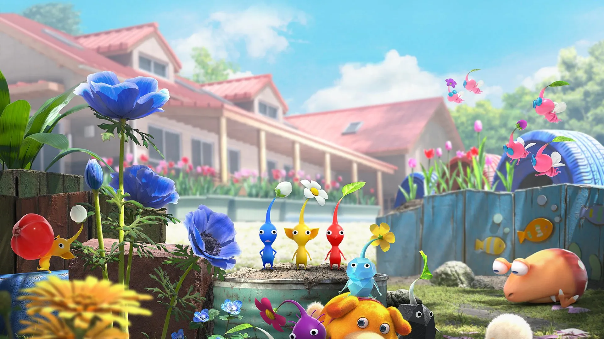
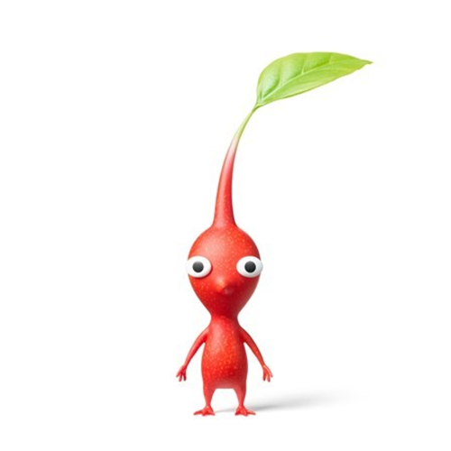
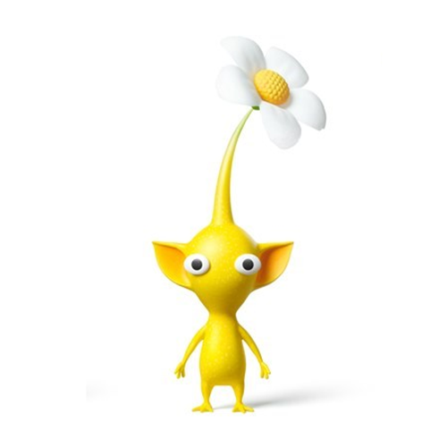
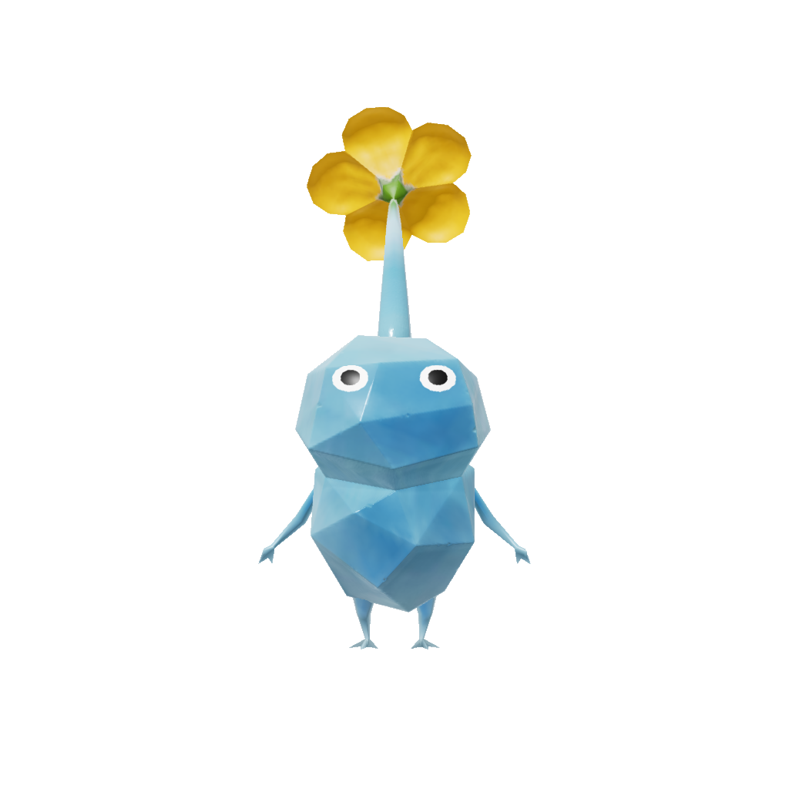
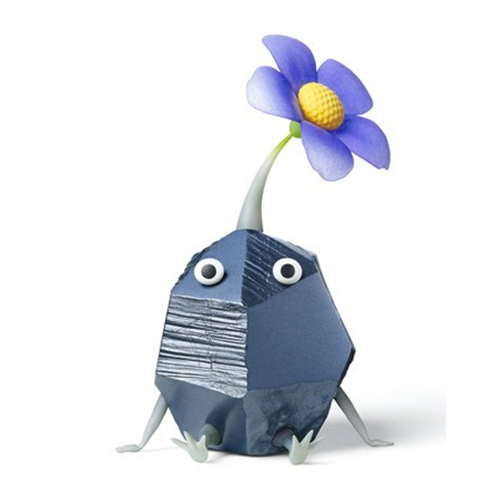
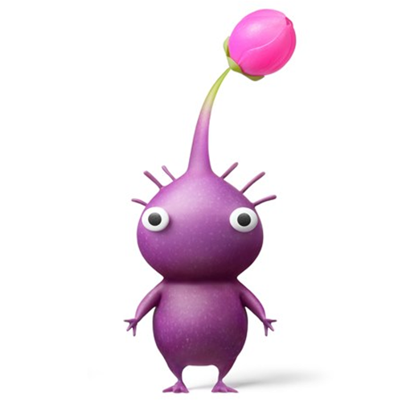
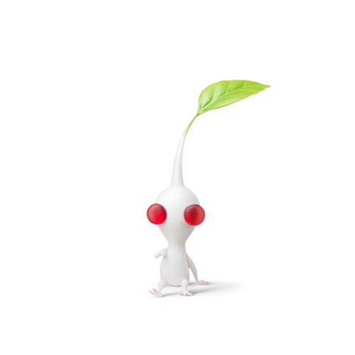
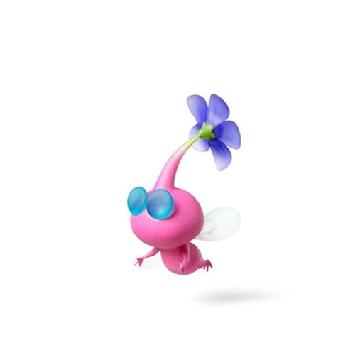

赤ピクミン
真っ赤な体に、とがった鼻が特徴のピクミン。半動半植物のピクミンの中でも、最も動物的な闘争心や好奇心が強い。高温などへの適応性も高いため、広い範囲に分布している。
青ピクミン
への字口が、何とも言えない表情の青ピクミン。歩根類は水が苦手なものも多い中、水陸どちらでも呼吸ができ、活動範囲が広い。

黄ピクミン
大きな耳のようなひだを持つ、黄色のピクミン。その耳を器用に使って、投げられると高く飛んだり、穴を掘ったりする。電気への耐性があり、電気を好む様子さえもうかがえる。

氷ピクミン
ヤドリピクミンの一種。体内に低温の核を持ち、大気中の水分を凍らせてできた氷に寄生することで、体を獲得している。

岩ピクミン
岩石に寄生した、ヤドリピクミン。ピクミンは植物にルーツを持っているが、宿主の奥深くまで根を張ることで体を獲得しているものもいる。

紫ピクミン
紫色をした、太くたくましい体つきのピクミン。力も重さも規格外で、ほかのピクミンの10匹分もある。白ピクミンと同様に、地下のポンガシグサでしか増やせない希少種。

白ピクミン
純白の小さな体に、赤い瞳が目を引くピクミン。体内に非常に強い毒（附子という生薬にもなる）を持ち、さまざまな毒物に対して耐性がある。地下にだけ咲く白ポンガシグサから生まれる。

羽ピクミン
水色メガネの丸い顔した、桃色のピクミン。背中に1対の羽があり空中を自在に飛び回ることができるが、その引き換えに体格は小柄で軽く攻撃力は弱い。